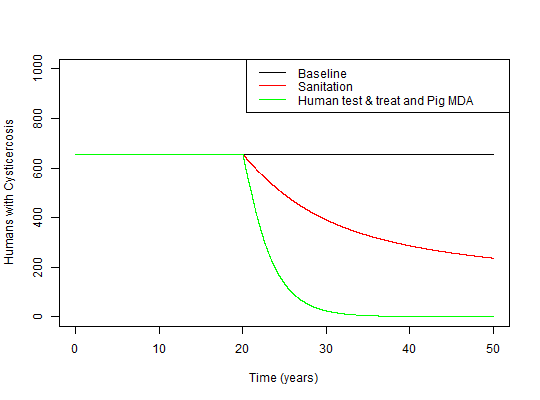

Runs the ODE Cysticercosis model
Run_model(Params = NULL, Initial_states = NULL, Time, Intervention = NULL, Intervention_time = Time/2, Intervention_effect = Intervention_effect_size(), step = 1/30, Burn_in = 0)
Intervention_effect_size for details# Run the baseline model: M1<-Run_model(Time=50, Burn_in=50) plot(M1$t/12, M1$Humans_Cysticercosis, t='l', ylim=c(0,1000), ylab='Humans with Cysticercosis', xlab='Time (years)')# Run the model with a single intevention: M2<-Run_model(Time=50, Intervention='Sanitation', Intervention_time=20, Burn_in=50) lines(M2$t/12, M2$Humans_Cysticercosis, col='red')# Run the model with multiple interventions: M3<-Run_model(Time=50, Intervention=c('Human_test_and_treat', 'Pig_MDA'), Intervention_time=20, Burn_in=50) lines(M3$t/12, M3$Humans_Cysticercosis, col='green')legend('topright', c('Baseline','Sanitation','Human test & treat and Pig MDA'), lty=c(1,1,1), col=c('black','red', 'green'))